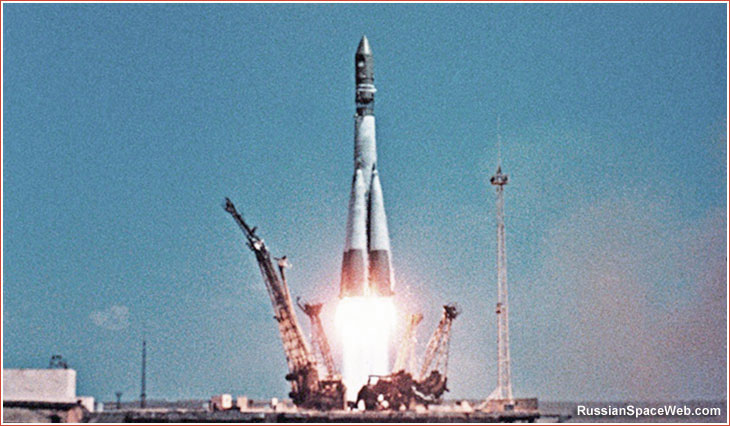

The Space Race: What is it and who is leading?

Space exploration has never been an easy task. It takes a small army of scientists, engineers, and precision manufacturers — and a huge amount of money. That's probably why, even today, only a handful of countries operate at the cutting edge.
It began in secret. The USSR was quietly developing the Vostok program, and on 12 April 1961 launched the first human into space: cosmonaut Yuri Gagarin, aboard Vostok 1, who completed a single orbit of the Earth. It was the first crewed spaceflight in history — the product of years of discoveries that had quietly built toward that moment.
The Space Race itself began a few years earlier, on 2 August 1955, when the Soviet Union responded to the United States' announcement that it intended to launch artificial satellites. What followed was a decades-long contest for dominance between the two superpowers — one that, in the end, no other nation has matched, even though many have since entered the field.
There's no official scoreboard, so who "won" is still debated. Most historians point to 20 July 1969, when Neil Armstrong became the first person to set foot on the Moon, as the moment the race effectively ended — a defining triumph for the US space program.
As of 2022, 77 government space agencies exist worldwide, 16 of which have the ability to launch. Of those, six have full launch and extraterrestrial landing capability: China (CNSA), Europe (ESA), India (ISRO), Japan (JAXA), the United States (NASA), and Russia (Roscosmos).
And that's before counting the growing list of private companies like SpaceX, which we'll leave for another post. So — who do you think is really in the lead? Thanks for reading, and until next time.